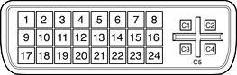

The external monitor connector is a DVI-I connector. It carries both digital and analog video signals. Figure 3-8 shows the contact configuration; Table 3-15 (page 54) and Table 3-16 list the signals and pin assignments.
Figure 3-8 DVI-I connectorr
| Pin | Signal name | Pin | Signal name |
| 1 | TMDS Data2– | 13 | TMDS Data3+ |
| 2 | TMDS Data2+ | 14 | +5V Power |
| 3 | TMDS Data2/4 Shield | 15 | Ground for +5V Power |
| 4 | TMDS Data4– | 16 | Hot Plug Detect |
| 5 | TMDS Data4+ | 17 | TMDS Data0– |
| 6 | DDC Clock | 18 | TMDS Data0+ |
| 7 | DDC Data | 19 | TMDS Data0/5 Shield |
| 8 | Analog Vertical Sync | 20 | TMDS Data5– |
| 9 | TMDS Data1– | 21 | TMDS Data5+ |
| 10 | TMDS Data1+ | 22 | TMDS Clock Shield |
| 11 | TMDS Data1/3 Shield | 23 | TMDS Clock+ |
| 12 | TMDS Data3– | 24 | TMDS Clock– |
| Pin | Signal name |
| C1 | Analog Red Video |
| C2 | Analog Green Video |
| C3 | Analog Blue Video |
| C4 | Analog Horizontal Sync |
| C5 | Analog Common Ground Return |
The graphics data sent to the digital monitor use transition minimized differential signaling (TMDS). TMDS uses an encoding algorithm to convert bytes of graphics data into characters that are transition-minimized to reduce EMI with copper cables, and DC-balanced for transmission over fiber optic cables. The TMDS algorithm also provides robust clock recovery for greater skew tolerance with longer cables or low cost short cables. For additional information about TMDS, see the references shown in "Digital Visual Interface".